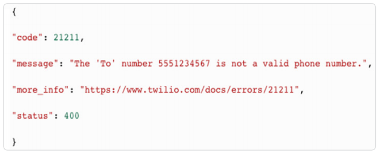
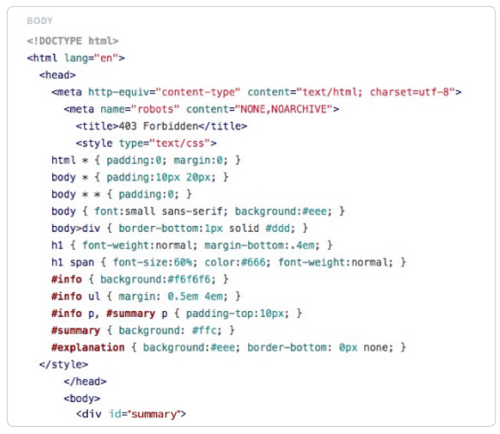

Have you ever used an API that returned an HTML error page instead of the JSON you expected, causing your code to blow up? What about receiving a 200 OK status code with a cryptic error message in your response?
Building an API can be as quick as serving fast food. Frameworks like Express, Flask, and Sinatra combined with Heroku or zeit’s now help any developer have an API up and running in a few minutes.
However, building a truly secure, sturdy, hearty API can take a little more work, just as a chef takes more time when crafting a great meal. You need great docs, clear and concise error messages, and to meet developers’ expectations of how your API should work.
On the other side of the table, we have developers interacting with these APIs. And we, as developers, sometimes make mistakes. We can make false assumptions about how an endpoint should work, not read the docs closely enough, or just not have enough coffee that morning to parse an error message.
Proper testing and monitoring tools can help us uncover issues that would otherwise stay hidden by a lack of integration tests, or real-world use case scenarios.
Here’s our list of 6 common mistakes that can catch you off guard, why they happen, and how you can avoid them.
USING HTTP:// INSTEAD OF HTTPS://
Forgetting a single “s” can get you in a lot of trouble when testing an API. Some APIs may only support HTTPS, while others may support HTTP for some endpoints and not others.
Even when an API supports both, you might still run into some errors. For example, some APIs redirect HTTP traffic to their HTTPS counterpart, but not all frameworks will be configured to follow a 302 status code. Node.js request module, for example, will follow GET redirects by default, but you have to explicitly set followAllRedirects to true if you want to follow redirects to POST and other methods.
APIs may also stop supporting HTTP, so it’s important to stay up-to-date with any changes. Good API providers will let users know beforehand via email and any social media channels they have. Another step you can take is to use a tool like Hitch, which lets you follow certain APIs and be notified if anything changes.
If you’re asking yourself if your API should support HTTPS, then the answer is yes. The process for getting certificates used to be a hassle, but with solutions like Let’s Encrypt and Cloudflare, there’s no excuse to not support HTTPS. If you’re unsure why you should do it, or don’t think you should because you’re not transmitting any sensitive data, I highly recommend reading Why HTTPS for Everything? from CIO.gov.
UNEXPECTED ERROR CODES
A good API error message will allow developers to quickly find why, and how, they can fix a failed call. A bad API error message will cause an increase in blood pressure, along with a high number of support tickets and wasted time.
I ran into this issue a couple of weeks ago while trying to retrieve an API’s access token. The code grant flow would return an error message saying that my request was invalid, but it wouldn’t give me any more details. After an hour banging my head against the wall, I realized I hadn’t paid attention to the docs and forgot to include an Authorization header with a base64 encoded string of my application’s client_id and client_secret.
Good usage of HTTP status code and clear error messages may not be sexy, but it can be the difference between a developer evangelizing your API and an angry comment.
Steve Marx had this to say in “How many HTTP status codes should your API use?”: “...developers will have an easier time learning and understanding an API if it follows the same conventions as other APIs they’re familiar with.” As an API provider, you don’t have to implement 70+ different status codes. Another great advice by Steve is:
“Following this pragmatic approach, APIs should probably use at least 3 status codes (e.g. 200, 400, 500) and should augment with status codes that have specific, actionable meaning across multiple APIs. Beyond that, keep your particular developer audience in mind and try to meet their expectations.”
Twilio is a great example of best practices for status code and error messages. They go the extra mile and include links in their responses, so the error message is concise while still providing the developer with more information in case they need it.

As API consumers, we need to be careful and not assume that an API 200 status code means the request made a successful call and returned the information we want. Some APIs, like Facebook’s Graph API, always return a 200 status code, with the error being included in the response data. So, when testing and monitoring APIs, always be careful and don’t automatically assume that a 200 means everything is OK.
Another great resource about response handling is Mike Stowe’s blog post on API Best Practices: Response Handling.
USING THE WRONG HTTP METHOD
This is an easy one, but surprisingly common. A lot of times this can be blamed on poor documentation. Maybe the endpoints do not explicitly say what methods are supported between GET/POST/PUT etc., or they have the wrong verb.
Tools can also play tricks on you if you’re not careful. For example, let’s say you want to make a GET request with a request-body (not a great practice, but it happens). If you make a curl request using the -d option, and don’t use the -XGET flag, it will automatically default to POST and include the Content-Type: application/x-www-formurlencoded header.
This post by Daniel Stenberg (author and maintainer of curl) on the unnecessary use of curl -X also illustrates another possibility you might run into this issue when dealing with redirects:
“One of most obvious problems is that if you also tell curl to follow HTTP redirects (using -L or –location), the -X option will also be used on the redirected-to requests which may not at all be what the server asks for and the user expected.”
Other times, we might fall into past assumptions and just use the wrong method. For example, the Runscope API uses POST when creating new resources, such as test steps or environments, and PUT when modifying them. But Stripe’s API uses POST methods when creating and updating objects.
Both approaches are valid, and Stormpath has a great blog post talking about their differences, and how to handle them as an API provider. No matter which one you choose, just be consistent throughout your API and make sure to have correct and up-to-date docs, so your users don’t run into this error.
SENDING INVALID AUTHORIZATION CREDENTIALS
APIs that implement OAuth 2, such as PayPal, usually require the developer to include an Authorization header for each request. It’s common to confuse that with Authentication instead, so if your request is failing, make sure you’re using the correct word.
Another issue that pops up with Authorization headers is actually constructing it correctly. OAuth 2 tokens need to be prepended with “Bearer” for them to work:
Authorization: Bearer your_api_token
It’s also important when using HTTP Basic authentication to pay close attention to the syntax of the header value. The form is as follows:
Authorization: Basic base64_encode(username:password)
Common mistakes include forgetting the Basic (note the space) prefix, not encoding the username and password or forgetting the colon between them. If an API provider only requires a username without a password (like Stripe, where your API key is the username), you’ll need that pesky colon after the username, even if there’s no password.
NOT SPECIFYING CONTENT-TYPE OR ACCEPT HEADER
Accept and Content-Type headers negotiate the type of information that will be sent or received between a client and server. Some APIs will accept requests that don’t contain any of those headers, and just default to a common format like JSON or XML.
Other APIs are a little more strict. Some might return a 403 error if you’re not explicit about the Accept header value and require you to include those headers on requests. That way, the server knows what information the client is sending, and also what format they expect to receive in return.
This issue can also because some confusion if you are testing your API with different tools. curl, for example, along with other popular testing tools, will automatically include an Accept header for any MIME type: */* with every request. We, at Runscope, don’t add a default Accept header, so this can get you different results when testing the same endpoint.
APIS RETURNING INVALID CONTENT TYPES WHEN THERE IS AN ERROR

I can say that this is one of my pet peeves with APIs. Seeing that line in a response makes my blood pressure go sky high.
Well, sometimes that’s my fault. If you forget to send an Accept header with your request, the API can’t be sure what response format you’re expecting.
For API providers, some frameworks and web servers default to HTML. For example, Symfony, a PHP framework, defaults to returning a 500 HTML error. So, if you’re creating an API that has no business returning HTML, make sure to check the defaults error response.
Another reason this might happen may not have to do with your API, but with the routing mesh or load balancer that sits in front of your API. For example, if you have a Nginx instance fronting your API and it encounters a request timeout or other error, it may return an HTML error before your API instances even have a chance to know what’s going on.
{kind=link}
{kind=link}